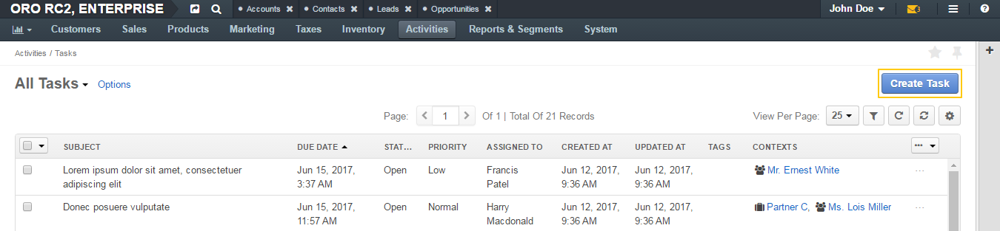
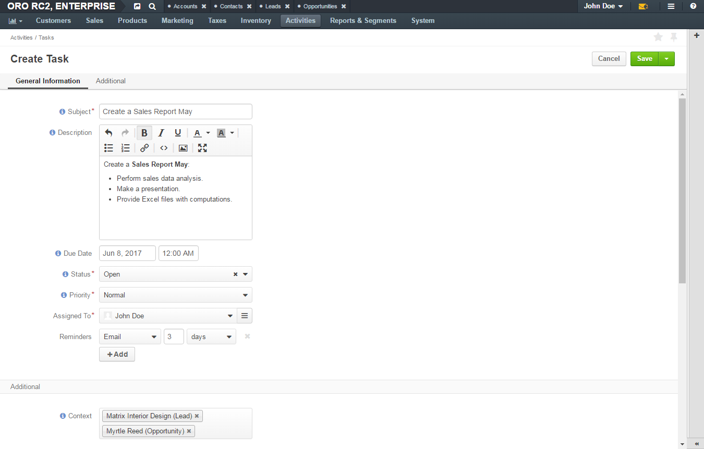
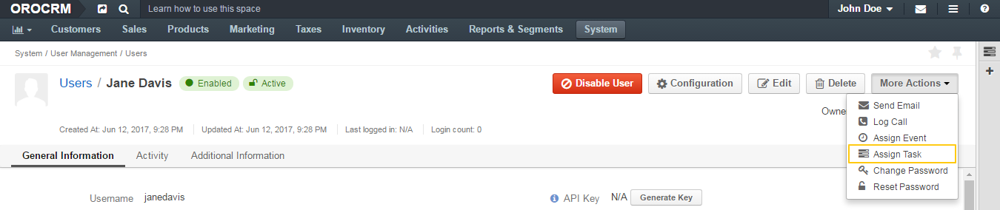
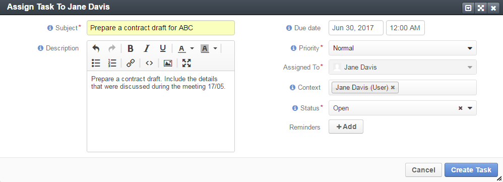

To add a task when viewing a list of tasks:
In the main menu, navigate to Activities>Tasks.
The Tasks page opens.
On the Tasks page, click the Create Task button in the upper-right corner of the page.
The Create Task page opens.
On the Create Task page, fill in the required information as described in the Detailed Task Information section.
Click Save and Close in the upper-right corner of the page.
From a user profile, you can create a task and automatically assign it the user.
To create a task from a user profile:
Open the profile of the user to whom you want to assign a task.
Click More Actions in the upper-right corner of the page and then click Assign Task on the list.
In the Assign Task To dialog, specify the required data. For the description of the fields see the Complete Task Information section.
Click Create Task. The task appears in the Additional Information section, Tasks subsection of the user profile.
Note
An administrator may define that users can be specified as a context for a task. In this case, the More Actions list on the user’s profile page will have two similar options: Assign Task and Add Task. The difference between them is the following:
See more about Add Task in the Create a Task from the Related Entity Record View Page section.
When adding or editing a task, fill in the following information:
Subject—Short, one-phrase description of what the task is about. It serves as a name of the task.
Description—Detailed statement of what work is to be done in relation to the task. Use the embedded editor to format text, add images, links, etc.
Important
Whether the embedded editor is available, is specified in the configuration. If you have access to the My Configuration page, see the WYSIWYG settings section of the Display Settings description.
If you do not have access to the page, contact your administrator who can enable the editor at the organization level.
Due Date—The day and time when the task must be completed.
Click the day field to select a day in the calendar dialog.
Click the time field to select a time from the list.
Alternatively, you can type in date and time values.
Status— The phase of work on the task. See Task Statuses for more information.
Important
You cannot set the task status if the Task Flow is enabled.
Priority— Nominates an order in which the task should be managed. Can be High, Normal, or Low. Higher-priority tasks should be managed first.
Assigned To—The user who is responsible for doing the work related to the task. The task appears in the calendar of the assignee.
Note
By default, a person who creates an task is selected as its assignee. Change the assignee if required. Select another user from the list. You may use the search field to quickly find the required user: start typing the name of the user and when suggestions appear, click the required name. Alternatively, you may click the hamburger menu next to the field and select the owner in the Select Assigned To dialog.
Reminders—A notification about the upcoming task’s due date.
Click the +Add button to configure when and how OroCommerce and OroCRM remind the participants about the task:
To remove a reminder, click the x icon next to it.
Note
In Oro applications, a task due date and time is displayed adjusted according to the recipient’s timezone settings both in notification emails and flash messages. (That is, if the task due time is displayed as 7 a.m. at the level of the organization run according to the New York time, the due time displayed in the reminder to the user who uses the Tokio time will be 8 p.m.)
Context—Select a record that has a meaningful relation to the task. Start entering a record name, and when the list of suggestions appears, click the required name to select it. The task is now linked to the selected item and is displayed in its Activity section.